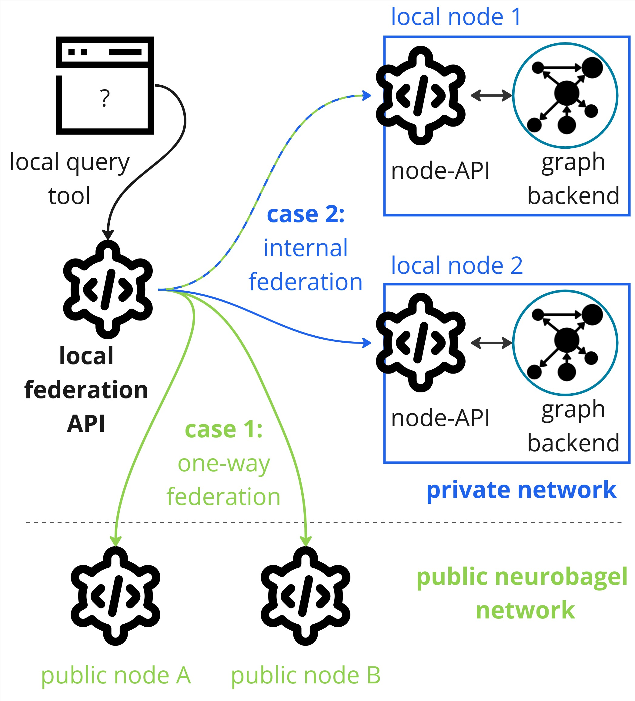

Set up local federation
When to use local query federation
There are two main reasons to deploy local query federation:
- Case 1: one-way federation. You have (at least) one local neurobagel node and you want your users to be able to search the data in the local node alongside all the publicly visible data in the neurobagel network.
- Case 2: internal federation. You have two or more local neurobagel nodes (e.g. for data from different groups in your institute) and you want your local users to search across all of them.

Note that these cases are not mutually exclusive. Any local neurobagel nodes you deploy will only be visible to users inside of your local network (internal federation).
When not to use local query federation
Query federation is not necessary, if you:
- only want to query public neurobagel nodes: Existing public nodes in the neurobagel network are accessible to everyone via our public query tool (e.g. on query.neurobagel.org), meaning you can run federated queries over these graph databases without any additional local setup.
- you only want to search a single neurobagel node: If you only have one local node that you want to query, it is easier to directly query the node API of this node. In that case, all you have to do is follow the deployment instructions for a neurobagel node and you are good to go.
Setting up for local federation
Federated graph queries in neurobagel are provided by the federation API (f-API) service.
The neurobagel f-API takes a single user query and then sends it to every
neurobagel node API (n-API) it is aware of, collects and combines the responses,
and sends them back to the user as a single answer.
Note
Make sure you have at least one local n-API configured and running
before you set up local federation. If you do not have any local
n-APIs to federate over, you can just use our public query tool directly at query.neurobagel.org.
Configuration files
Three configuration files are needed for local Neurobagel federation (described in detail in the sections below). We recommend that you clone and edit the files from our neurobagel/recipes repository, which contains templates of all files needed for configuring different types of Neurobagel deployments.
Run the following code to get the configuration files for local federation:
git clone https://github.com/neurobagel/recipes.git
cd local_federation # for local federation, ensure you only edit files inside this subdirectory
# make a non-template copy of the files you will need to edit
cp local_nb_nodes.template.json local_nb_nodes.json
cp template.env .env
Then, edit local_nb_nodes.json and .env in your local_federation/ directory as needed for your specific deployment, based on the instructions in the below sections.
Note
You can also make a copy of and modify the three configuration files in a new directory of your choice. However, ensure that the f-API configuration files are stored in a separate directory from those used to set up your local node.
local_nb_nodes.json
local_nb_nodes.json contains the URLs and (arbitrary) names of the local nodes you wish to federate over.
Each node must be denoted by a dictionary {} with two key-value pairs:
"NodeName" for the name of the node,
"ApiURL" for the URL of the API exposed for that node.
Multiple nodes must be wrapped in a list [].
Let's assume there are two local nodes already running on different servers of your institutional network, and you want to set up federation across both nodes:
- a node named
"Node Archive"running on your local computer (localhost), on port8000and - a node named
"Node Recruitment"running on a different computer with the local IP192.168.0.1, listening on the default http port80.
In your local_nb_nodes.json file you would configure this as follows:
[
{
"NodeName": "Node Archive",
"ApiURL": "http://host.docker.internal:8000",
},
{
"NodeName": "Node Recruitment",
"ApiURL": "http://192.168.0.1"
}
]
Do not use localhost/127.0.0.1 in local_nb_nodes.json
If the local node API(s) you are federating over is running on the same host machine as your federation API (e.g., the URL to access the node API is http://localhost:XXXX), make sure that you replace localhost with host.docker.internal in the "ApiURL" for the node inside local_nb_nodes.json.
For an example, see the configuration for the node called "Node Archive" above.
Nodes that do not need to be manually configured
We maintain a list of public Neurobagel nodes
here.
By default every new f-API will lookup this list
on startup and include it in the list of nodes to
federate over.
This also means that you do not have to manually
configure public nodes, i.e. you do not have to explicitly add them to your local_nb_nodes.json file.
To add one or more local nodes to the list of nodes known to your f-API, simply add more dictionaries to this file.
.env
.env holds environment variables needed for the f-API deployment.
# Configuration for f-API
# Define the port that the f-API will run on INSIDE the docker container (default 8000)
NB_API_PORT=8000
# Define the port that the f-API will be exposed on to the host computer (and likely the outside network)
NB_API_PORT_HOST=8080
# Chose the docker image tag of the f-API (default latest)
NB_API_TAG=latest
# Configuration for query tool
# Define the URL of the f-API as it will appear to a user
API_QUERY_URL=http://206.12.85.19:8080 # (1)!
# Chose the docker image tag of the query tool (default latest)
NB_QUERY_TAG=latest
# Chose the port that the query tool will be exposed on the host and likely the network (default 3000)
NB_QUERY_PORT_HOST=3000
-
When a user uses the graphical query tool to query your f-API, these requests will be sent from the user's machine, not from the machine hosting the query tool.
Make sure you set the
API_QUERY_URLin your.envas it will appear to a user on their own machine - otherwise the request will fail.
The template file above can be adjusted according to your own deployment.
If you have used the default Neurobagel configuration for your local n-API up to this point, you likely do not need to change anything in this file.
docker-compose.yml
docker-compose.yml is a Docker configuration file describing the required services, ports and paths
to launch the f-API together with a connected query tool.
Make sure you have a recent version of docker compose installed
Some Linux distributions come with outdated versions of docker and
docker compose installed. Please make sure you install docker
as described in the official documentation.
You should not have to change the template contents of this file.
All local configuration changes should be made in either the local_nb_nodes.json or .env files.
version: "3.8"
services:
federation:
image: "neurobagel/federation_api:${NB_API_TAG:-latest}"
ports:
- "${NB_API_PORT_HOST:-8000}:${NB_API_PORT:-8000}"
volumes:
- "${PWD}/local_nb_nodes.json:/usr/src/local_nb_nodes.json:ro"
environment:
- NB_API_PORT=${NB_API_PORT:-8000}
extra_hosts:
- "host.docker.internal:host-gateway"
query:
image: "neurobagel/query_tool:${NB_QUERY_TAG:-latest}"
ports:
- "${NB_QUERY_PORT_HOST:-3000}:3000"
environment:
- API_QUERY_URL=${API_QUERY_URL:-http://localhost:8000/}
Launch f-API and query tool
Once you have created your local_nb_nodes.json, .env, and docker-compose.yml files as described above, you can simply launch the services by running
docker compose up -d
from the same directory.